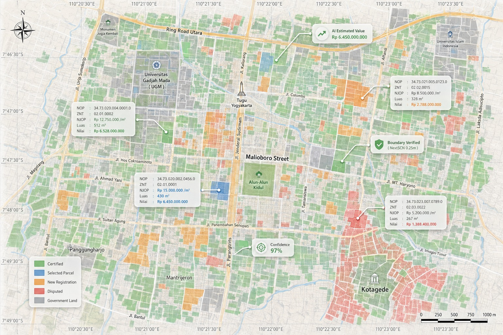

Dashboard Eksekutif & Analitik
Pantau tren penerimaan harian, bandingkan target vs realisasi per kecamatan/desa, dan putuskan berbasis data dengan cepat.
Setiap bidang terpetakan, setiap NJOP akurat, setiap rupiah piutang tertagih. PBBSmart! menyatukan data atribut dan spasial Bapenda dalam satu platform cerdas.

Tantangan terbesar pengelolaan PBB-P2 bukan memungut pajak — melainkan validitas NJOP dan tumpukan piutang bertahun-tahun.
PBBSmart! memfasilitasi Bapenda melakukan rekonsiliasi data, pemutakhiran Zona Nilai Tanah (ZNT), hingga memetakan piutang tak tertagih secara visual dan terstruktur.
Ringkasan data PBB-P2 dan realisasi ketetapan pajak.
Sistem end-to-end yang mengawal administrasi PBB: dari pendataan, penetapan, pencetakan, hingga penagihan dan pelaporan.
Pantau tren penerimaan harian, bandingkan target vs realisasi per kecamatan/desa, dan putuskan berbasis data dengan cepat.
Tinggalkan cetak fisik yang mahal. Wajib Pajak mengunduh e-SPPT mandiri melalui portal publik dengan keamanan QR Code.
Hubungkan NOP dengan peta bidang tanah. Identifikasi pergeseran batas, objek belum terdaftar, dan anomali NJOP secara visual.
Simulasikan perubahan tarif & ZNT sebelum ditetapkan. Analisis dampak penyesuaian NJOP terhadap potensi PAD secara instan.
Filter NOP dengan tunggakan beruntun. Hasilkan daftar sasaran penagihan & surat teguran massal otomatis dalam satu klik.
Terhubung langsung dengan BPD dan kanal pembayaran lainnya. Status lunas tercatat saat itu juga — tanpa jeda H+1.
PBBSmart! tidak berdiri sendiri. API terbuka yang dijamin aman menghubungkan Bapenda dengan seluruh pemangku kepentingan.
Sinkronisasi data persil tanah & zona nilai.
Validasi status lunas PBB untuk e-BPHTB.
BPD, QRIS, e-Commerce, retail & Bank Himbara.
Cek tagihan, unduh e-SPPT, & bayar online.
Tingkatkan sistem informasi PBB Anda ke level berikutnya tanpa disrupsi operasional — pengalaman layanan digital terbaik bagi warga, sekaligus penerimaan daerah yang teramankan.